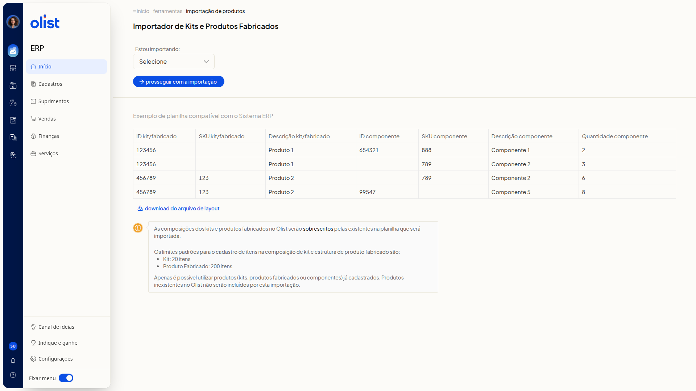

Importar planilha de composições de kits e estrutura dos produtos fabricados
Descrição
No ERP da Olist, você importa por planilha a composição dos kits e a estrutura dos produtos fabricados. Na página, você escolhe Kits ou Produtos Fabricados, consulta o exemplo de planilha ou baixa o layout e segue para carregar o arquivo.
Acesse pelo menu lateral Início > Ferramentas > Importações > Cadastros > Kits e Produtos Fabricados.
Pré-requisitos
- Permissão de Produtos, permissão para importar registros e permissão para incluir e editar produtos. O suporte acessa mesmo sem essas permissões.
- Kits, produtos fabricados e componentes da planilha já cadastrados. Produtos inexistentes não são incluídos por esta importação.
- Planilha no formato do Exemplo de planilha compatível com o Sistema ERP ou do arquivo do link download do arquivo de layout.
Importante
- As composições dos kits e dos produtos fabricados no ERP serão sobrescritas pelas da planilha.
- O limite padrão de itens na composição é de 20 para kit e de 200 para produto fabricado.
- O arquivo precisa ser Excel (.xls ou.xlsx) ou CSV e ter no máximo 2Mb.
Instruções
-
Acesse Início > Ferramentas.
-
Abra a aba Importações. Na seção Cadastros, clique em Kits e Produtos Fabricados.
-
Selecione Kits ou Produtos Fabricados em Estou importando, na página Importador de Kits e Produtos Fabricados. O campo não é obrigatório e a lista traz Selecione, Kits e Produtos Fabricados. O exemplo de planilha e as regras de sobrescrita e de limite permanecem iguais nas duas opções.

-
Monte a planilha com as colunas abaixo, como no Exemplo de planilha compatível com o Sistema ERP. O exemplo mostra, entre outras linhas, o kit/fabricado 123456 (Produto 1) com o componente 654321 / SKU 888 (Componente 1), quantidade 2, e o kit/fabricado 456789 / SKU 123 (Produto 2) com componentes de quantidade 6 e 8. Se preferir o modelo, acesse o link download do arquivo de layout.
- ID kit/fabricado
- SKU kit/fabricado
- Descrição kit/fabricado
- ID componente
- SKU componente
- Descrição componente
- Quantidade componente
-
Clique em prosseguir com a importação. A tela Carregar arquivo pede um arquivo Excel (.xls ou.xlsx) ou CSV de no máximo 2Mb. Cancelar volta à página do importador sem enviar o arquivo.
Links relacionados
Se você precisar de ajuda com a importação, fale com o suporte.